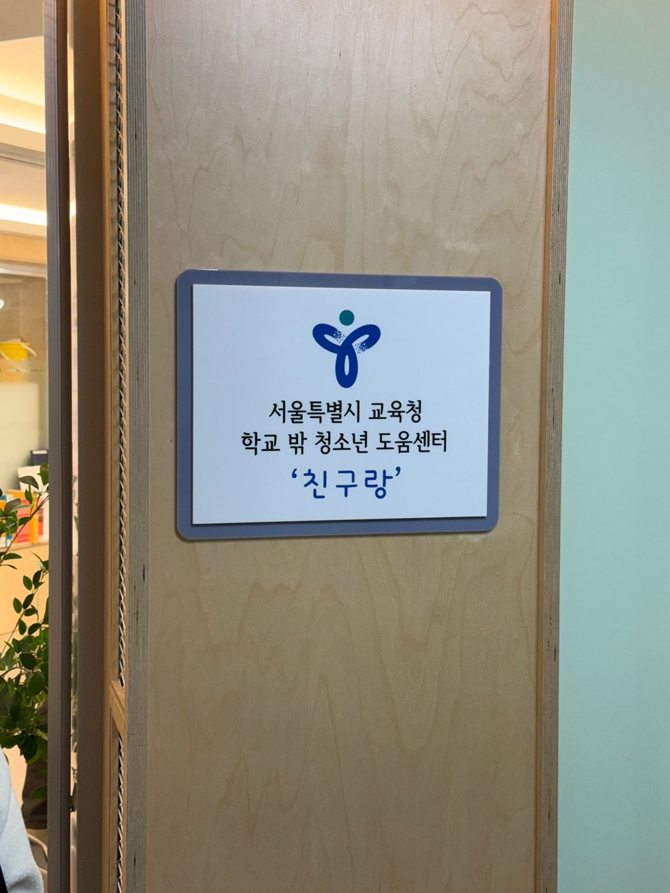

Why
왜방과 후 교육 격차
같은 수업을 들어도 방과 후 배움의 기회는 가정의 소득에 따라 달라집니다. 학생 1인당 사교육비는 3.4배 차이가 납니다.
800만 원 이상
300만 원 미만
가구 월소득별 학생 1인당 월평균 사교육비: 800만 원 이상 66만 2천 원, 300만 원 미만 19만 2천 원 · 국가데이터처·교육부, 2025년 초중고 사교육비조사 · 자세히
아이들에게는 학업만큼이나 곁에서 함께 시간을 보내는 사람이 필요합니다. 교육복지는 공부뿐 아니라 마음과 관계도 함께 살핍니다. EDU:BRIDGE는 아이들 곁에서 마음을 나누는 시간을 만듭니다.
왜같은 수업을 들어도 방과 후 배움의 기회는 가정의 소득에 따라 달라집니다. 학생 1인당 사교육비는 3.4배 차이가 납니다.
가구 월소득별 학생 1인당 월평균 사교육비: 800만 원 이상 66만 2천 원, 300만 원 미만 19만 2천 원 · 국가데이터처·교육부, 2025년 초중고 사교육비조사 · 자세히
누가팀 육하원칙이 멘토가 되어 아동복지시설에서 생활하는 아동·청소년을 만납니다.
언제11월 27일과 12월 7일에는 만들기 활동, 12월 4일에는 나눔 활동을 진행합니다.
어디서서대문교육복지센터의 소개로 서울특별시립 아동푸른센터와 연결됐습니다. 나눔 활동으로 마포구 망원무지개지역아동센터도 찾아갑니다.
무엇을계산기 클리커 꾸미기와 크런치 말랑이 만들기, 그리고 지역아동센터에 물품을 기부하며 이야기 나누는 나눔 활동입니다.
어떻게기관을 찾아가 함께 만들며 이야기를 나누고, 그 과정을 기록으로 남깁니다.
현장에서 들은 이야기를 바탕으로, 팀원들이 함께 고민해 지금의 활동 방향을 정했습니다.

마포구 학교 밖 청소년 도움센터 친구랑과의 사전 미팅에서, 학습 지원은 이미 여러 경로로 받고 있거나 아이들이 바라는 것이 공부가 아닌 경우도 많다는 이야기를 들었습니다. 공부를 돕는 것보다 함께 시간을 보내는 일이 더 필요하다고 판단했습니다.
짧은 만남에서 멘토와 깊이 정이 들면, 활동이 끝나고 헤어지는 일이 아이들에게 아쉬움이나 부담으로 남을 수 있습니다.
멘토와 멘티가 가까워지는 데 목표를 두지 않습니다. 부담 없이 즐거운 활동을 하나 하고, 그 시간 동안 아이들끼리 어울리고 웃을 수 있도록 곁에서 돕습니다.
EDU:BRIDGE는 성적을 올리는 대신 아이들 곁에 머무는 시간을 택했습니다. 함께 손을 움직이고 이야기를 나누다 보면 마음도 자연스럽게 열립니다.
교육복지 현장에서는 정서와 관계의 어려움을 함께 지원합니다.
사전 미팅을 한 서대문교육복지센터는 학생 한 명 한 명의 상황에 맞춰 지원하고, 학생의 전인적 성장을 목표로 둔다고 소개합니다.
출처: 서대문교육복지센터 소개 자료
정서적 교류를 활동의 중심에 두었습니다.
처음 만난 사람과 마주 앉아 이야기만 나누기는 어렵습니다. 나란히 앉아 스티커를 고르고 손을 움직이면 말을 꺼내기가 한결 쉽습니다. EDU:BRIDGE가 만들기를 고르고, 아동·청소년이 생활하는 센터로 찾아가는 이유입니다.
활동 계획 · 계산기 클리커 만들기(11월 27일)와 크런치 말랑이 만들기(12월 7일), 우공비 문제집 나눔(12월 4일)의 진행 순서는 활동 페이지에 있습니다.
지역아동센터는 방과 후 아이들이 머무는 곳입니다. EDU:BRIDGE는 여러 지역아동센터를 찾아가 필요한 물품을 전달하고, 아이들과 이야기를 나눕니다.


2026년 지역아동센터 기본 운영비는 동결됐고, 늘어난 예산은 대부분 종사자 인건비였습니다. 아이들 프로그램과 물품에 쓸 여유는 그대로입니다. 자료 자세히
무엇을 준비할지는 센터에 먼저 묻습니다. 필요한 학년과 과목, 아이들이 좋아하는 것에 맞춰 고르고 직접 찾아가 전달합니다.
전달하는 날에는 아이들과 인사하고 이야기를 나눕니다. 전달 사진과 나눈 이야기는 아카이브에 기록합니다.